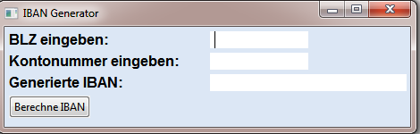

-
Promnicat

PromniCAT is a framework to import various business process models of many business process model repositories into one generic database (therefore the "Pro" for process and "omni" in the name). This enables research on the entire collection across the boundaries of business process modeling notations. PromniCAT is completely written in JAVA. The database used for business process model persisting is Orient DB. For business process model analysis we use jBPT, a graph analysis framework. You can get a large set of process models for evaluating your algorithms from the BPM Academic Initiative (BPMAI) homepage. The BPMAI homepage provides filters for choosing process models with desired process characteristics for your evaluation. PromniCAT offers a direct importer for the BPMAI process models to jump start your research.
-
FamilyTree
Project under development.
-
IBAN Generator
Generates an IBAN from given data.